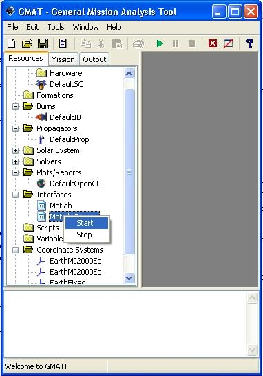

GMAT was designed to allow users to run GMAT scripts through MATLAB®. This feature gives the user greater control and flexibility of GMAT that cannot be done with just the GMAT to MATLAB® interface or GMAT alone. For example, if a user would like to dynamically change scripts and run them, that can currently only be done using the MATLAB® to GMAT interface. A MATLAB® script can also be generated to run GMAT scripts that are located in mutliple folders.
If, after running through this tutorial, you still have difficulties with the interfaces between MATLAB® and GMAT working, visit our MATLAB Help Forum or our MATLAB<->GMAT Interface FAQ forum topic.
[rootGMATpath] - folder with the GMAT executable
Ex_TargetHohmannTransfer.script - Sample Mission script used for running GMAT from Matlab
runMatlabToGMAT.m - MATLAB® script that runs the GMAT script
runMatlabToGMATsimple.m - simplified MATLAB® script that runs the GMAT script
Place the downloaded script runMatlabToGMAT.m script into the [rootGMATpath]\matlab\ directory
WARNING! This script clears the MATLAB® workspace. Save your current MATLAB® data if it's needed
Make sure the script Ex_TargetHohmannTransfer.script is in the [rootGMATpath]\input\SampleMissions\ directory
Unless it has been done already, open MATLAB® and add [rootGMATpath]\matlab\ directory and the sub-directories to the MATLAB® path.
Open GMAT and start the Matlab Server.
*The server can be started by navigating in the Resources tree to the Interfaces folder. Right click the Matlab Server object and select Start.
|  |
Figure: Opening Matlab Server in GMAT Resource Tree
Run runMatlabToGMAT.m in MATLAB®
Open a file browser to the [rootGMATpath]\output\SampleMissions\ directory and open the ASCII Ex_TargetHohmannTransfer.report script in a text editor.
Scroll down to the last few lines, and notice the extra lines indicating that this script was run from MATLAB® . If the Ex_TargetHohmannTransfer.script file is run from GMAT, these lines will not be present.
Congratulations - you have finished the main section of this tutorial. Be sure to open the runMatlabToGMAT.m script, to understand how GMAT is controlled by MATLAB® . This MATLAB® script is heavily commented to explain what is being done. If you still have questions, feel free to post them at our GMAT Source Forge forums (http://sourceforge.net/projects/gmat/)
The runMatlabToGMAT.m Matlab script might be too complicated for novice MATLAB® users. If so, use a simplified version of the script, runMatlabToGMATsimple.m. For this script a .m file is needed, so copy the Ex_TargetHohmannTransfer.script and rename the copy as Ex_TargetHohmannTransfer.m . Follow the above instructions but first rename the runMatlabToGMAT.m file to runMatlabToGMATsimple.m.